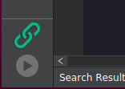

MaixPy IDE

首先需要弄清： MaixPy 使用Micropython 脚本语法，所以不像 C语言 一样需要编译，其实不用IDE也能愉快使用： 使用串口终端工具，后面会介绍
使用 IDE 则会方便在电脑上实时编辑脚本并上传到开发板以及直接在开发板上执行脚本，以及在电脑上实时查看摄像头图像、保存文件到开发板等
当然， 使用 IDE 因为压缩、传输需要耗费一部分资源，所以性能会有所降低，但对调试来说影响不大
1. MaixPy 固件
要使用MaixPy IDE , 固件必须是v0.3.1 版本以上, 否则MaixPyIDE上会连接不上， 使用前尽量检查固件版本和 IDE 版本，都更新到最新版以保障能正常使用
2. 下载安装包
文件列表等说明 请看 最新版本文件夹下的 readme.txt 文件
3. 安装
如果是安装程序(推荐，简单方便)
Windows直接双击exe文件运行安装程序; Linux命令行给运行权限然后执行
chmod +x maixpy-ide-linux-x86_64-0.2.2.run
./maixpy-ide-linux-x86_64-0.2.2.run
如果是压缩包(7z)
则解压到文件夹
如果系统不支持
7z， 则需要 下载7z解压缩工具，然后用7z
在Linux下也可以双击压缩包进行解压！
如果需要使用终端解压， 可以参考以下命令：
sudo apt install p7zip-full
7z x maixpy-ide-linux-x86_64-0.2.2-installer-archive.7z -r -omaixpy-ide
# `-o` 后面直接跟解压缩的路径, 中间没有空格.
- 解压后, 执行
- 如果是
Windows： 直接双击maixpyide来执行，可以右键固定到开始页面或者固定到任务栏方便后面使用 Linux： 执行chmod +x setup.sh ./setup.sh ./bin/maipyide.sh
- 如果是
4. 测试运行
打开IDE, 上方工具栏里面选择开发板的型号.
Tool-> Select Board (工具->选择开发板)
点击 connect 连接 MaixPy IDE

连接成功之后，链接按钮会由绿变红．

连接按钮下方是运行按钮，会执行当前编辑区的py文件．
再次点击运行按钮(红色), 停止运行当前代码．
5. 上传文件
在 Tool 选项中可以选择发送文件
6. 注意
点击连接后，不用和终端同时使用，否则会出现串口占用无法打开